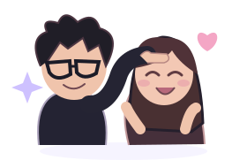

Saltar al contenido
✦
Nuestro Mundo
UNA PARTE DE NUESTRO UNIVERSO
Inicio
Juegos
Colección
Comunidad
Entrar
↗
Estás explorando sin cuenta. Puedes jugar en este dispositivo; las monedas y las salas necesitan una cuenta en línea.
×

Preparando otro ratito juntos…
Jesús & Julissa